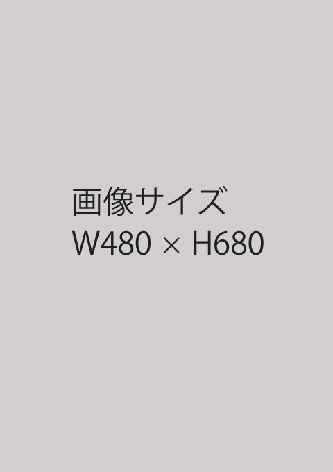

鈴木敦之
- 生年月日
- 1976年7月26日
- 現住所
- 埼玉県川口市東川口3-7-25-201
- 最終学歴
- 越谷総合技術高等学校卒業
- 既婚
- 子供2人（中学校、小学校）
- 趣味
- 映画鑑賞、ネットサーフィン、ゲーム
- 特技
- ゲーム、プラモデル作成
職歴
・この時期に、とある事情でソフト開発の要望があることを知り、独自に作成する。
・月残業が400時間を超える地獄のような日々を経験…
・福岡から東京進出立ち上げメンバーとして入社。勘定奉行のカスタマイズがメイン業務。
・当初はGISメインの子会社に出向。GISエンジンを使用したシステム開発を行い、GoogleMap公開後は、GoogleやYahooも使用…
志望動機
会社での公募が行われていたので、存在を知りました。
18から社会に出て、無我夢中で仕事をし、27で結婚、28で子供と駆け足で人生を走ってきました。
1次受けとはいえ、「システムは作るもの」であり、要件をシステム化することは考えてきましたが、「要件」事態を生み出すことは行ってきてません。
この業界にいると「新しいものを生み出す」方々と話をする機会が多くありますが、うらやましく聞いていました。
そこに「ProtOut Studio」の公募があり、内容を確認すると、まさに自分自身が今まで考えてこなかった内容を習得するための教室ということなので、是非に入学したいと考えています。
18から社会に出て、無我夢中で仕事をし、27で結婚、28で子供と駆け足で人生を走ってきました。
1次受けとはいえ、「システムは作るもの」であり、要件をシステム化することは考えてきましたが、「要件」事態を生み出すことは行ってきてません。
この業界にいると「新しいものを生み出す」方々と話をする機会が多くありますが、うらやましく聞いていました。
そこに「ProtOut Studio」の公募があり、内容を確認すると、まさに自分自身が今まで考えてこなかった内容を習得するための教室ということなので、是非に入学したいと考えています。
技術経験
企画書
ああああ